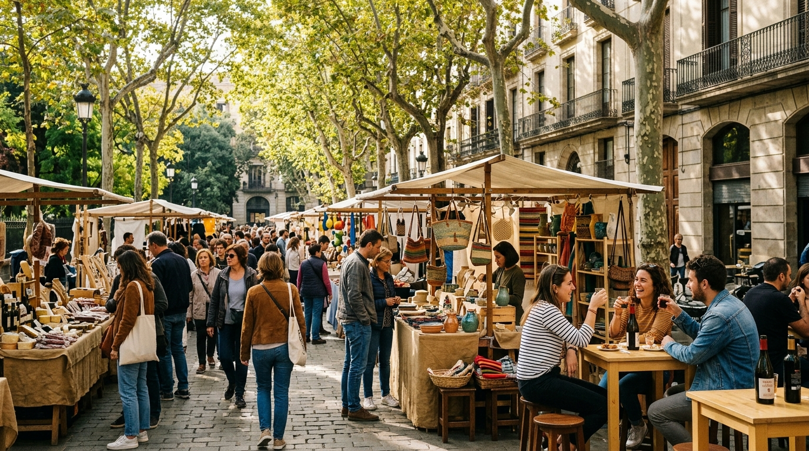

5 Planes este Fin de Semana en Barcelona (2 al 4 de octubre de 2026): Mercados de Otoño, Fiesta Mayor de Les Corts y Rutas Gratis
Si buscas qué plan hacer en Barcelona este fin de semana (del 2 al 4 de octubre de 2026): arranque de la Fiesta Mayor de Les Corts, mercados al aire libre en El Born, primer domingo de museos gratis y vermut en Gràcia.

1. Fiesta Mayor de Les Corts (del 2 al 4 de octubre): correfocs, castellers y ruta de tapas en la Plaça de Comas
El primer fin de semana de octubre arranca la Fiesta Mayor de Les Corts, que recupera el ambiente de antiguo pueblo independiente con exhibiciones castelleras el domingo a mediodía, pasacalles de gigantes, talleres gastronómicos y conciertos acústicos al aire libre lejos del turismo masivo del centro.
2. Mercado de diseño, artesanos y vermut al sol entre el Passeig del Born y la Ciutadella
Aprovecha la luz suave de principios de octubre para recorrer los puestos de cerámica, ilustración local y gastronomía de proximidad bajo los plátanos del Born, visitando gratis el yacimiento arqueológico de la Barcelona de 1700 dentro del antiguo mercado de hierro.
3. Primer domingo de mes con entrada gratuita a los grandes museos y al Pabellón Mies van der Rohe
Al coincidir este domingo 4 de octubre con el primer domingo del mes, numerosos museos y joyas arquitectónicas de Barcelona abren sus puertas gratis, incluyendo el icónico Pabellón de Barcelona de Mies van der Rohe, el MUHBA en la Plaça del Rei y el MNAC.
4. Paseo de otoño por los Jardins de Laribal y el anfiteatro oculto del Teatre Grec
Después de visitar el pabellón, sube por las escalinatas de cerámica y fuentes árabes que diseñó Forestier en 1922 hasta la terraza del Teatre Grec, uno de los rincones más silenciosos de Barcelona para leer o tomar un café a media mañana.
5. Tarde de librerías de barrio y aperitivo en la Plaça de la Virreina en Gràcia
Cierra el domingo paseando por las calles peatonales de la parte alta de Gràcia, curioseando en sus librerías independientes antes de sentarte en los escalones o terrazas frente a la iglesia de Sant Joan o de pasar a una sesión en versión original en los Cines Verdi.
Preguntas frecuentes
¿Qué museos son gratis en Barcelona este domingo 4 de octubre de 2026?
Por ser primer domingo de mes, abren gratis todo el día el Pabellón Mies van der Rohe, el Museu Nacional d'Art de Catalunya (MNAC), el Museu de la Música, el Museu Marítim y el Castillo de Montjuïc.
¿Hace falta reservar entrada para los museos gratuitos del primer domingo de mes?
En el MNAC y el Museo Picasso es muy recomendable sacar la entrada gratuita anticipada en su web oficial entre el jueves y el viernes para asegurar franja horaria.